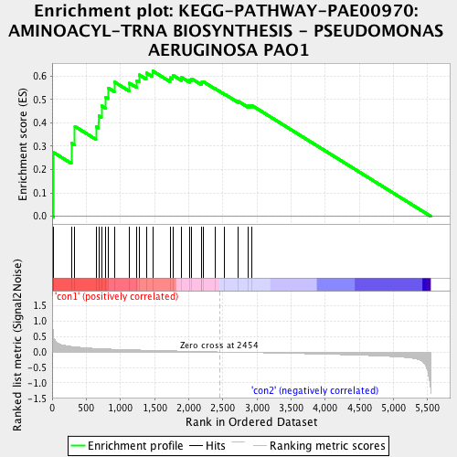
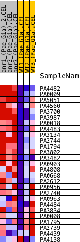
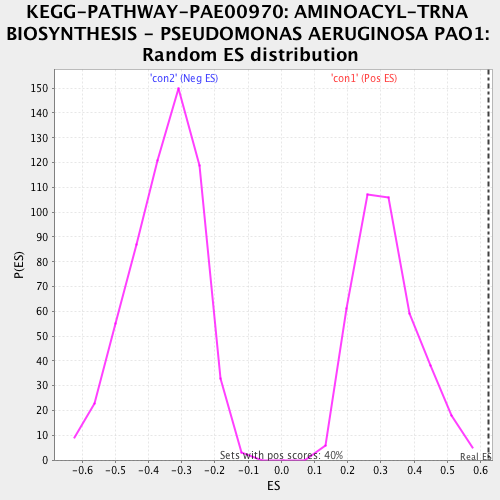

| | | Dataset | Anr_gene.AnrvsWT.cls#con1_versus_con2 |
| Phenotype | AnrvsWT.cls#con1_versus_con2 |
| Upregulated in class | con1 |
| GeneSet | KEGG-PATHWAY-PAE00970: AMINOACYL-TRNA BIOSYNTHESIS - PSEUDOMONAS AERUGINOSA PAO1 |
| Enrichment Score (ES) | 0.6225468 |
| Normalized Enrichment Score (NES) | 1.963611 |
| Nominal p-value | 0.0 |
| FDR q-value | 0.043752883 |
| FWER p-Value | 0.132 |
Table: GSEA Results Summary

Fig 1: Enrichment plot: KEGG-PATHWAY-PAE00970: AMINOACYL-TRNA BIOSYNTHESIS - PSEUDOMONAS AERUGINOSA PAO1
Profile of the Running ES Score & Positions of GeneSet Members on the Rank Ordered List

Fig 2: KEGG-PATHWAY-PAE00970: AMINOACYL-TRNA BIOSYNTHESIS - PSEUDOMONAS AERUGINOSA PAO1
Blue-Pink O' Gram in the Space of the Analyzed GeneSet

Fig 3: KEGG-PATHWAY-PAE00970: AMINOACYL-TRNA BIOSYNTHESIS - PSEUDOMONAS AERUGINOSA PAO1: Random ES distribution
Gene set null distribution of ES for KEGG-PATHWAY-PAE00970: AMINOACYL-TRNA BIOSYNTHESIS - PSEUDOMONAS AERUGINOSA PAO1